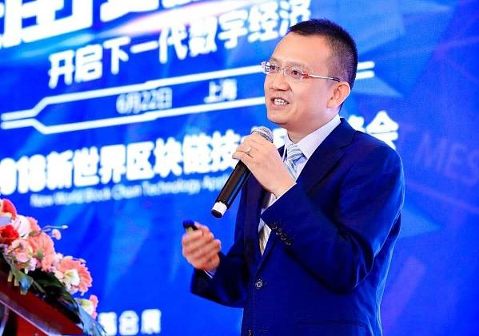

王立仁 乐观者无畏丨金色财经独家专访
发布时间：2018/06/25 热门推荐 浏览次数：371
导读:上个星期，《金色财经》记者有幸采访到了WeShare链社群创始人王立仁先生，他是中国区块链领域的导师和布道者，区块链产业专家，比特币技术专家，同时也是全球首先提出「区块链是互联网空间中数据和信息的确权工具，以及互联网经济本地化理论」的先驱者。在采访中，王立仁身上有两个标签特别明显，那就是乐观和无畏。

乐观
总起来说，作为WeShare链的缔造者，王立仁是一个乐观的人。
为了避免出现歧义，他又将这种乐观重新解释了一下，「乐观是源于专业性，而专业性让我无所畏惧。」
事实也的确如此，在信息通讯领域耕耘了20年之久，让王立仁对于乐观的执拗愈来愈深，大概在2004年前后，他和华为、思科同时竞标国内一所大学的宿舍网项目，王立仁管这种竞标叫做「打单」，这很形象，单子摆在那，看你有什么方法把它打下来。在14年前，面对一千多万的巨单，没有人不心动，华为和思科先后放出了狠话，就算穷尽全力，也要将这一单子打到手。
两边都是业内巨头，作为项目负责人的王立仁立刻被推进了夹缝中，除了地位相差悬殊之外，王立仁所开发的这套认证系统，成本比华为和思科还高出了30%，在当时很多人看来， 这一仗根本就是「未打先输」。
最先承受不住的是销售人员，他们找到王立仁，语气里带着哭腔「仁哥，咱降降价吧，压力太大了。」王立仁坚持不降价，还劝他们乐观一点，「真正有价值的产品不应该被贱卖。」
后来，单子打了半年，客户迟迟不肯落单，研发人员最后也受不了了，客户要求一遍又一遍的测试系统，这让很多人渐渐失去了耐心，他们觉得问题的关键点在王立仁身上，于是纷纷表示可以降降价，赶紧把单子拿下。但王立仁的答案反复就三个字，「坚持住。」
王立仁依旧很乐观，他志在必得，这套系统从最初设计、研发、测试到最后的销售环节，每一步他都走的自信满满，他将这种乐观，归结为「对专业性的认知」。
终于，在纠缠了大半年之后，王立仁技胜一筹，力压华为和思科，如愿以偿的拿下了这笔单子，在《金色财经》记者采访这一天，问起已是不惑之年的王立仁，「想没想过，当时很有可能输给华为和思科，为什么会这么乐观？」
在摆放着乔布斯画像的会客室里，空调呼呼的冒着冷气，王立仁听罢露出了一个与极客气质不相称的狡黠的眼神，「只要没人砍我的脑袋，那都不叫事儿。」

跌入深渊
从2009年一直到2012年前后，为银行金融、电子商务、教育医疗等领域提供过无数软硬件解决方案的王立仁去卖了几年房产，那几年他突然意识到什么东西一旦具备了稀缺性，那价值就立刻显现出来了，这也是他第一次真正领悟到了「物以稀为贵」的重要性。
这种观念在王立仁的意识中越来越深刻，直到后来比特币横空出世。
2012年10月的一天，王立仁在一次出差途中看到了一篇关于比特币的报道，极客所独有的好奇心让他立刻去找来代码运行了一遍，运行完以后，王立仁立刻确定「这就是未来的发展方向了！」
「比特币创造了一种稀缺性，而且加密货币将是历史演进的必然。」但让王立仁没有想到的是，三年后，他却因此而陷入了深渊之中。
2014年下半年，一个朋友找到王立仁，他说正在筹建一个大型比特币矿场，已经物色好了地皮， 火力发电，很便宜，而且已经跟当地政府协商好了，长期供电，末了又拍着胸脯保证，「放心，绝对不会有问题。」
王立仁深知对于矿场来说，电力保障是绝对的重中之重，他连借带凑，投了几千万进去。实际上，朋友向他隐瞒了一个重要的消息，因为二氧化硫超标严重，当地政府不允许矿场开工。直到政府要求关闭矿场的一纸文书摆在了王立仁面前，他才知道被朋友骗了，几千万全部打了水漂，朋友也携款失踪，「到现在也不知道他去了哪里，反正就是消失了。」
除了被骗走的钱，按照托管协议，王立仁还有一大笔赔偿金需要赔偿给客户，他卖了一些币，等咬着牙处理完赔偿问题，基本上就倾家荡产了。那一段时间，身无分文的王立仁每次外出都要先规划好路线，能不坐地铁的时候就尽量不坐地铁，公交车虽然慢，但至少能省点钱。
跌入深渊后的王立仁并没有就此沉沦，这种欺骗和打击反而彻底激发出了他的乐观，他说每次觉得很苦很难熬的时候，就总有一个小人跳出来告诉他，「这都不是事，会过去的。」
以局外人的视角来看待自己的遭遇，并把所有苦难当成一种人生阅历，这是为什么王立仁在跌入深渊后，依旧能保持乐观的原因，「以后还能跟小孙子讲讲故事，你看爷爷当年那么苦都熬过来了。」他说。

格局
最近几年，王立仁的心态改变了很多，只要坚持了该坚持的，这事成就成，不成就拉倒，「要是你什么事都能干成，那生活还有什么意思？」
WeShare链从立项发展到现在，已经过去了两年时间，是业内很早期的一批区块链项目。差不多从2017年年底开始，区块链大热，各种良莠不齐的区块链项目开始井喷，「那个时候无论什么项目，但凡稍微一炒作，就有大笔大笔的资金涌过来，但仁哥一直很低调并且拒绝炒作，」WeShare链市场总监张杰说，「很多数千万级的资金要投WeShare链，仁哥全部拒绝，让他们先去搞懂什么是真正的区块链。」
在刚刚起链的时候，WeShare链曾遭到过一次黑客袭击。这群黑客攻击了矿池，赶走了其他矿工，又给王立仁发了一封恐吓邮件，要求他支付点比特币保平安。整个项目部如临大敌，感觉天快要塌下来了，王立仁不急也不躁，跟同事们说，「稳住，没事，天塌下来我顶着。」随后对矿池做了防护，增加了矿池和节点的数量，黑客觉得自讨没趣，撤退了。事后，王立仁把这次黑客袭击事件总结为「很有乐趣，大家可以一块玩。」
作为区块链领域的导师和布道者，王立仁所创立的WeShare链入选了2018工信部区块链白皮书案例，将食品从育苗、种植或养殖、生产加工、运输到销售环节的数据记录在共享账本上。他希望把分布式数据库、命名网络和物联网相关设备与区块链的记录、交易、认证相结合，实现对广泛的链下信息映射，乃至一切价值数据信息上链记录，让数据信息变得透明且不可篡改，通过WeShare链完成对一切信息的溯源、大数据的确权与数据交易行为。「如果方向是对的，顺应民意，大家自然会把WeShare链放在一个很高的位置上。」王立仁说，「这需要时间来成就，但目前看来，一切都还好。」